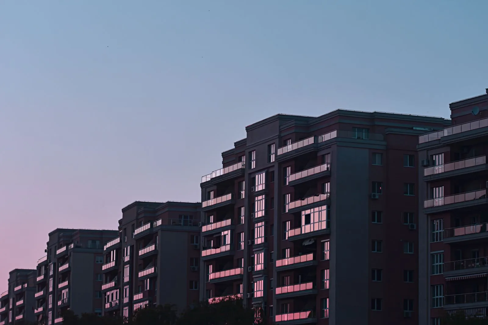
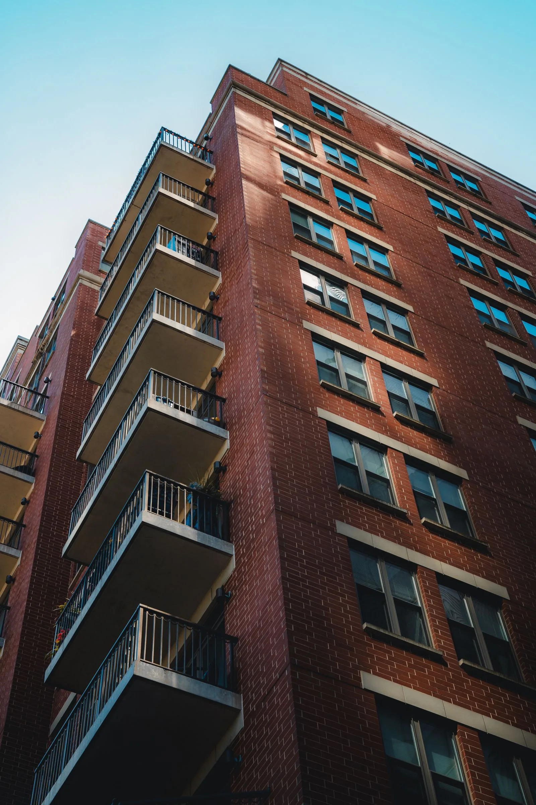
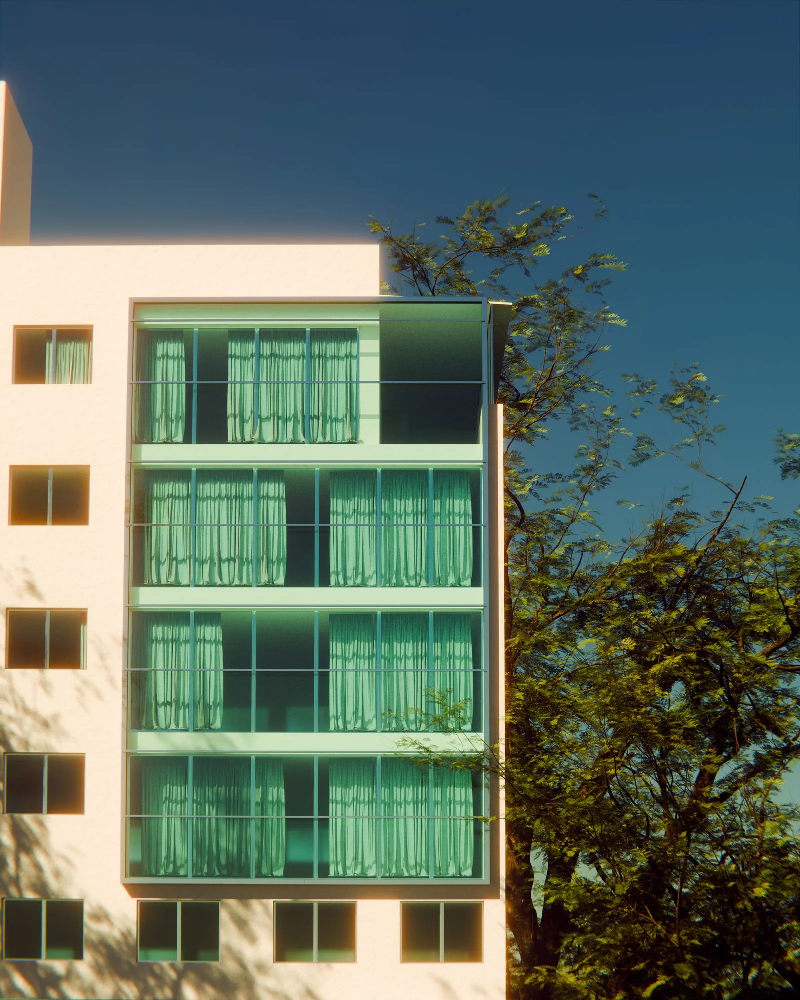
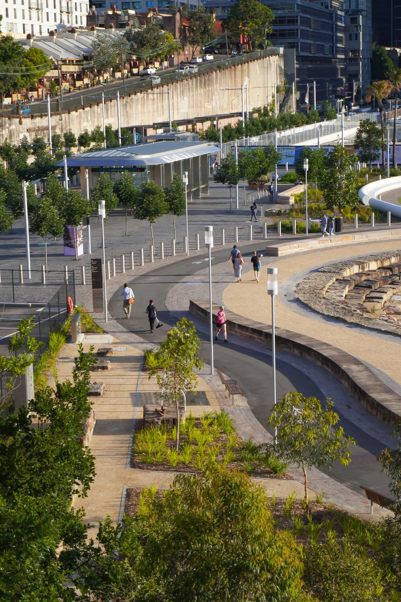
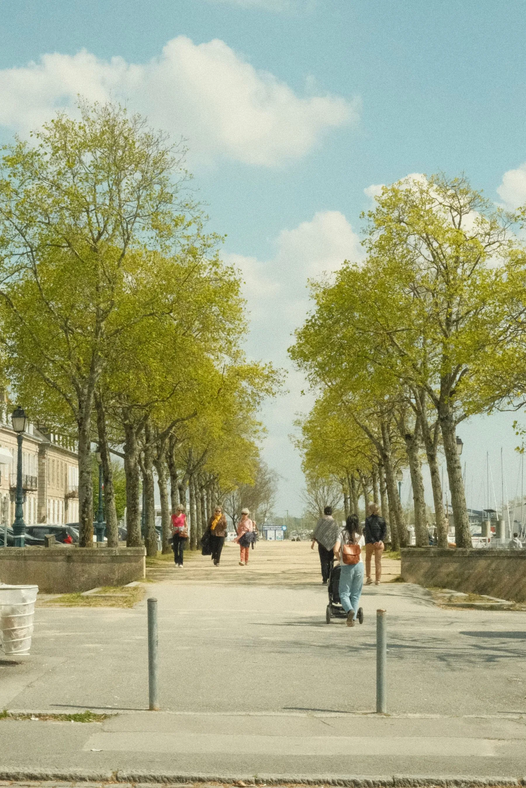
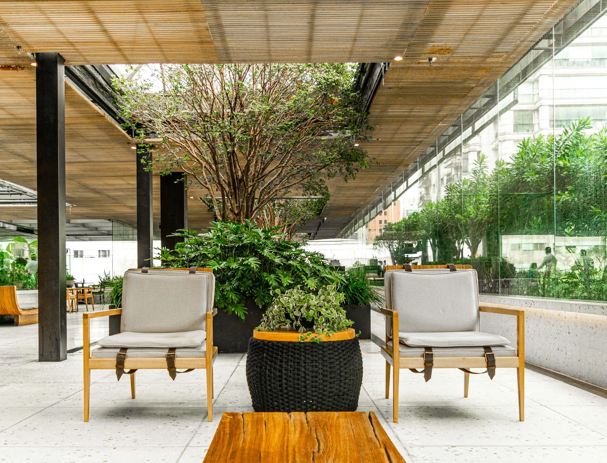

Приморский район01 / 03
Жилой квартал
Остров
Вода, прогулочные маршруты и спокойный двор в центре городского движения.

Мы проектируем не только метры, но и то, что происходит между ними: прогулки, встречи и время для себя.
Смотреть проектыУ дома есть продолжение. Двор, в котором хочется задержаться. Улица, где всё нужное рядом. Квартал, который становится своим.
У каждого квартала свой адрес и характер. Общее — внимание к тому, как вы будете жить каждый день.
Вода, прогулочные маршруты и спокойный двор в центре городского движения.

Камерный формат рядом с любимыми местами города.

Место для новых семейных привычек и неспешных выходных.
Три важных продолжения квартиры. У каждого своё настроение и свой сценарий дня.
Тихие места для разговора, маршруты для прогулок и пространство, которое не нужно делить с машинами.

Кофе, спорт, работа и встречи — всё в привычном радиусе пешей прогулки.

Понятные входы, светлые пространства и детали, которые замечаешь каждый день.

Выберите корпус на схеме «Острова» и посмотрите, как устроен квартал.
Из окон — вид на прогулочный маршрут вдоль набережной. Внизу — тихий двор и вход с улицы.
От первого своего пространства до большой семейной квартиры.
Ключевые этапы проекта «Остров» — от фундамента до передачи ключей.
Подготовка площадки и фундамент
Монолит и фасады корпусов
Коммуникации, входные группы, благоустройство
Приёмка и передача квартир
Пример расчёта для квартиры стоимостью 11,8 млн ₽. Точные условия зависят от банка и выбранной программы.
Обсудить покупкуКвартал становится понятнее во время прогулки. Посмотрите планировки, почувствуйте масштаб двора и задайте вопросы.